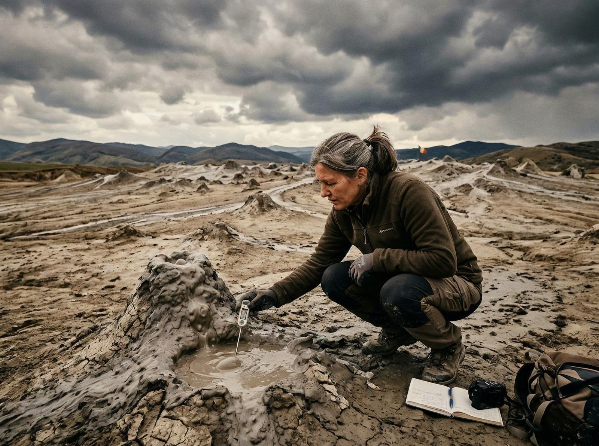
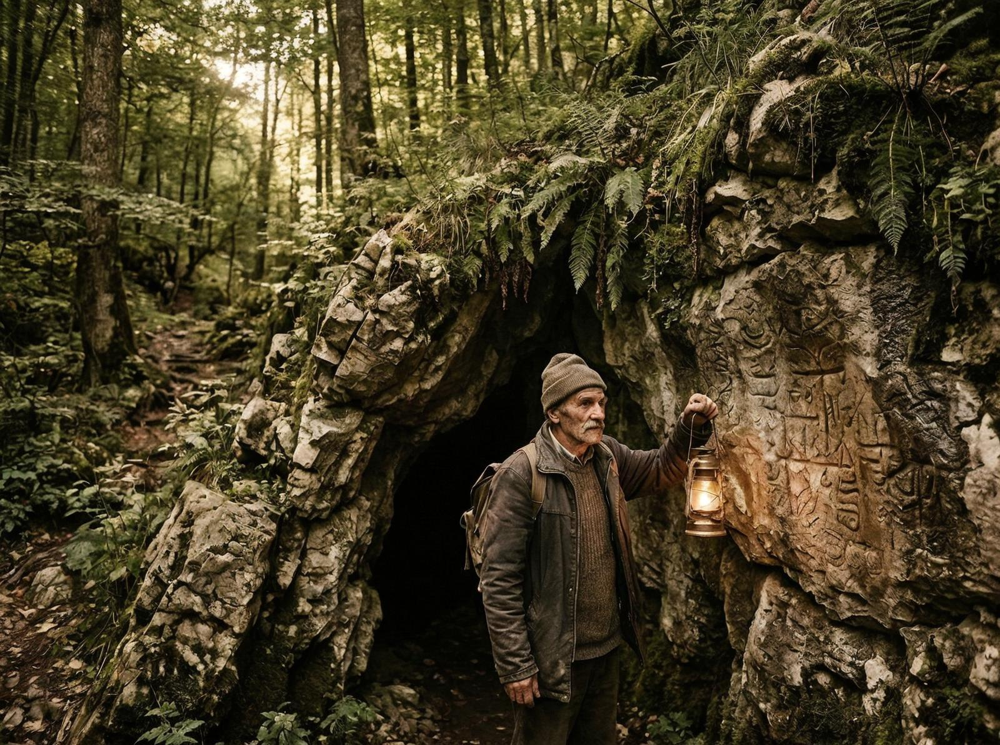

Dacă tragi o linie dreaptă între Brașov și Buzău, treci printr-o zonă care pe hărțile normale arată ca orice altă zonă muntoasă din România. Pădure, dealuri, câteva sate, drumuri județene care arată mai degrabă ca drumuri forestiere. Nimic special. Nimic care să îți atragă atenția.
Numai că, de câteva decenii, oamenii raportează lucruri care nu au ce căuta acolo. Și nu una, două. Ci un pattern constant care îți face să te întrebi dacă harta, nu locul, e problema.
Să începem cu ce știm sigur. Munții Buzăului sunt o zonă carstică — calcar, peșteri, formațiuni geologice care îți dau senzația că pământul e un sistem de pliuri care s-a oprit la jumătatea procesului de strângere. E frumos, dar nu ieșit din comun. Până când începi să auzi poveștile.

Ține minte detaliul ăsta, pentru că devine important imediat: majoritatea martorilor nu sunt entuziaști ai paranormalului. Sunt localnici, pădurari, oameni care au crescut în zonă și care ar prefera să nu aibă ce să raporteze.
În 2015, un pădurar din zona Luci-Lacul Roșu a raportat o dispariție. Nu a dispărut el — a dispărut câinele său. Un ciobănesc românesc, adult, bine antrenat, care a ieșit în pădure și nu s-a mai întors. Pădurarul l-a căutat trei zile. A chemat ajutor. Au găsit urmele care se opreau brusc la marginea unei poienițe. Apoi nimic. Niciun alt set de urme. Niciun semn de luptă. Pur și simplu, câinele a ieșit din realitate pe acel petec de pământ.
Și acum vine partea ciudată — pentru că nu e prima dată când se întâmplă asta.

În arhivele locale, din anii '80 și '90, există rapoarte despre dispariții similare. Unele au fost explicate prin prădători, altele prin accidente. Dar câteva — destule ca să formeze un pattern — au rămas neexplicate. Oameni care au intrat în pădure și nu au mai ieșit. Sau care au ieșit, dar nu mai erau aceiași. Confuzi. Dezorientați. Ca și cum timpul în pădure nu funcționează cum funcționează în afara ei.
Știința zice: probabil expuneri naturale, oboseală, fenomene psihologice legate de izolare. Realitatea, însă, e că zona are și alte anomalii care nu intră ușor în explicația asta.
În 2004, o echipă de cercetători a venit să testeze nivelurile de radiație din zonă. Au adus contorul Geiger, au setat baza, au început măsurătorile. La un moment dat, contorul a început să sune. Nu constant. În valuri. Valuri care nu corespundeau cu nicio sursă cunoscută de radiație din zonă. Echipa a mutat contorul. Valurile au continuat. Au schimbat bateriile. Nimic.
Și totuși, când au revenit a doua zi, totul era normal. Fără valuri. Fără anomalii. Ca și cum ceva ar fi aprins și stins un comutator în timp ce ei nu priveau.
Să trecem la partea cu uriașii. Da, ai citit bine.
În 2008, arheologii au descoperit în zonă morminte care, la o primă vedere, păreau normale. Oase umane, poziție fetală, ceramică din neolitic. Dar măsurătorile au arătat ceva neașteptat: scheletele aveau 2,2-2,4 metri înălțime. Nu sunt uriași mitologici. Sunt oameni, doar că mai mari decât media. Mult mai mari.
Explicația oficială este că e o eroare de măsurare sau o deformare osoară cauzată de dietă sau genetică. Problema e că au fost găsite mai multe schelete, nu unul singur. Și toate au aproximativ aceeași înălțime anormală.
Și acum întrebarea pe care nimeni nu o pune: dacă o comunitate de oameni de 2,3 metri a trăit în Munții Buzăului acum câteva mii de ani, unde sunt restul dovezilor? Unde sunt locuințele lor, unde sunt uneltele lor, unde sunt, pur și simplu, urmele lor pe scară largă?
Răspunsul e incomodabil: nu există. Pareau să apară din neant, să trăiască, să moară, și să dispară fără să lase o amprentă clară pe peisaj.
OZN-urile — pentru că trebuie să le menționăm — au fost raportate în zonă începând cu anii '70. Nu ca un fenomen constant, ci ca apariții sporadice, ciudate. Luminile care se mișcă în forme care nu sunt naturale. Discuri care stau deasupra pădurii fără zgomot. Martorii care le văd spun același lucru: nu le e frică. E o curiozitate, o fascinație. Ca și cum privindu-le le-ar da acces la ceva ce nu ar trebui să vadă.
Știința zice: fenomene atmosferice, halucinații, identificări greșite. Realitatea, însă, e că zona are și alte anomalii care sugerează că ceva se întâmplă acolo.
În 2016, un grup de entuziaști a venit să filmeze un documentar. Au adus echipamente profesioniste, camere cu infraroșu, recordere audio. În a treia noapte, toate camerele s-au oprit simultan. Nu au murit bateriile. Nu s-a stricat nimic. S-au oprit. Ca și cum cineva ar fi scos prizele din priză, fără să atingă prizele.
A doua zi, camerele au pornit din nou. Nicio explicație. Nicio eroare. Doar un blackout inexplicabil în mijlocul pădurii.
Ține minte detaliul ăsta: nu a fost o singură cameră. Au fost trei. Toate au reacționat la fel. În același timp.
Există teorii, desigur. Cea mai populară spune că Munții Buzăului sunt un vârf energetic — un punct unde câmpurile geomagnetice și câmpurile electromagnetice ale Pământului intersectează în moduri care creează fenomene neobișnuite. Oamenii care cred în asta spun că zona este un portal sau o fereastră spre alte dimensiuni. Oamenii care nu cred în asta spun că e doar o serie de coincidențe și erori umane.
Nu știu cum să explic asta, dar problema cu ambele explicații e că niciuna nu acoperă toate datele. Fenomenele sunt prea variate ca să fie o simplă coincidență, dar prea consistente ca să fie erori umane. Și, poate cel mai important, prea persistente. Nu s-au oprit în anii '70 sau '90. Continuă și azi, cu aceeași frecvență și aceeași natură.
Pentru localnici, Munții Buzăului sunt pur și simplu așa: o zonă în care lucrurile nu se întâmplă cum se întâmplă în alte locuri. Au învățat să trăiască cu asta, să nu pună prea multe întrebări, să evite anumite zone la anumite ore. Și să accepte că unele mistere rămân mistere, indiferent de câte contori Geiger aduci.
Probabil că asta e și cea mai mare anomalie dintre toate: oamenii care trăiesc în mijlocul celor mai bizare fenomene din România și care, în ciuda tuturor, preferă să rămână.
Nu știu ce înseamnă asta. Dar știu că merită să fie menționat.